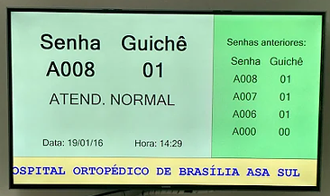

Módulo Painel TV
Para exibir a tela de senha e o sinal de TV aberta, fechada ou um vídeo institucional enquanto o usuário aguarda sua senha ser chamada.
Sistema totalmente informatizado que roda em plataforma Windows e utiliza recursos de rede, podendo ser acionado a partir de qualquer computador que estiver alocado na rede, sem contar os recursos de multimídia, que a partir deste, permite veicular vídeos em DVD e propagandas, entre outros, jornal de texto, relatórios estatísticos e gráficos de atendimento, tempo médio de atendimento, quantidade de senhas atendidas e outros dados pertinentes ao atendimento.
Para exibir a tela de senha e o sinal de TV aberta, fechada ou um vídeo institucional enquanto o usuário aguarda sua senha ser chamada.
Programa para geração e impressão das senhas. Ao chegar no posto de atendimento, o usuário verifica o menu na tela e escolhe, num monitor tátil, o botão correspondente ao serviço desejado. Ao fazer isso, uma senha será impressa automaticamente para o serviço requisitado. Tendo em vista o elevado custo do monitor touch-screen, o sistema possui a opção de um painel com vários botões e uma descrição, por meio de uma etiqueta ou algo similar, do serviço associado aquele botão. Esta opção não necessita de um computador dedicado para essa operação.
Este módulo pode rodar no mesmo computado em que outros módulos estejam instalados. Entretanto, o ideal é instalar este módulo em um computador interno ao posto de atendimento, pois é ele que detém toda a inteligência do sistema, e qualquer intervenção na operação devem ser efetuados a partir dele. O programa Servidor é responsável por receber e atender aos pedidos de senhas dos terminais de atendimento, receber as requisições de emissão de senhas e enviá-las para a impressora, transmitir dados para o(s) painel(eis) de exibição das senhas chamadas, gerenciar a operação dos outros módulos e emitir relatórios gerenciais. Esse módulo consome pouca memória e não necessita de nenhum banco de dados para operar, assim, pode ser instalado em um computador com poucos recursos. Os relatórios gerados estão no formato aberto RTF e podem ser lidos por praticamente todos os editores de texto existentes.
Importante! Para que o sistema opere corretamente é necessário que todos os computadores utilizados estejam conectados a uma rede local, em um mesmo segmento.
Este módulo será operado pelos atendentes do posto de serviço, responsáveis pelo atendimento ao público em geral, em quantos terminais forem necessários. A função deste módulo é requisitar uma senha ou repetir uma senha já chamada, toda vez que o atendente acionar uma tecla específica ou uma combinação de teclas.
Somos uma empresa sediada em Brasília, especializada em projeto de fabricação, instalação e manutenção de painéis de senha para gerenciamento de atendimento ao público. Operamos também em outros estados.
Nossa missão é disponibilizar produtos e soluções eficientes ao atendimento público, sempre priorizando o cliente, deixando-o isento de qualquer preocupação relacionada ao desenvolvimento dos trabalhos.
Horário de funcionamento:
Segunda a sexta de 08:00 às 18:00
CLN 07 Bloco "H" Lote 1/2 Sala 07 - Riacho Fundo I-DF